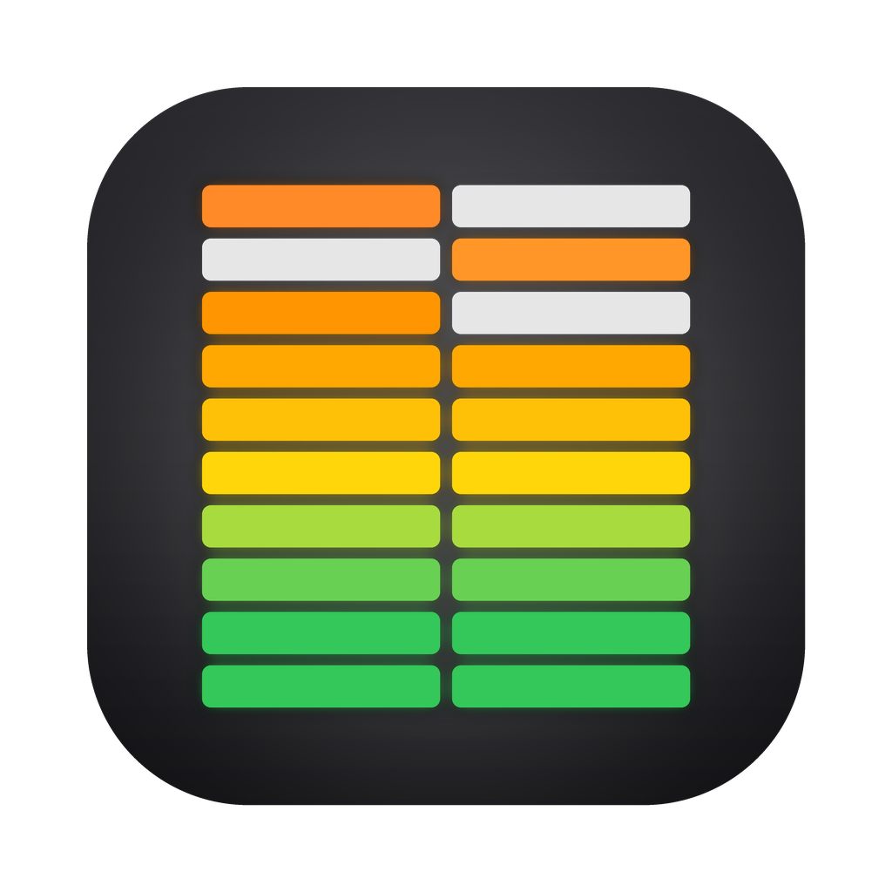
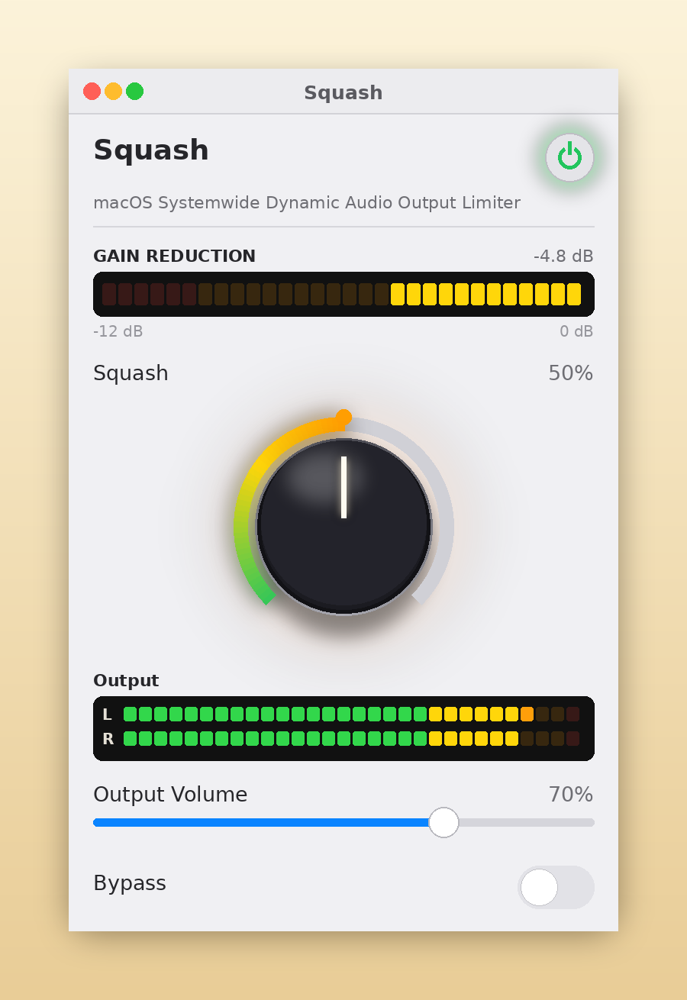
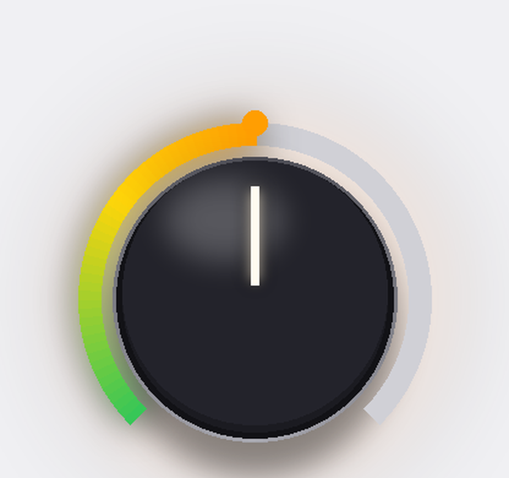
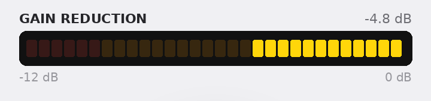
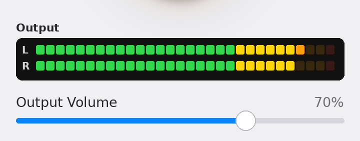
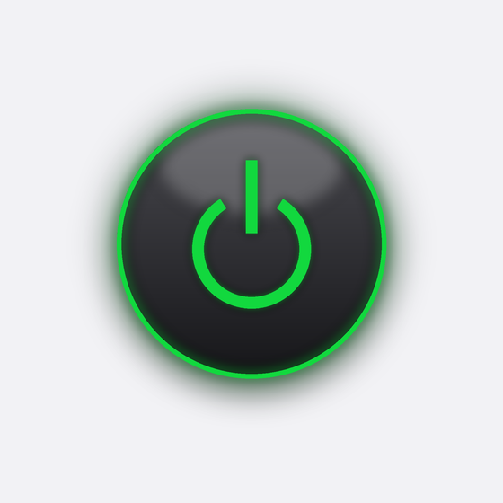

Radio station limiting for internet audio levels
Download SquashSquash is a free limiter for your Mac’s system audio. It helps control loud DJs, quiet interviews and blaring station IDs at a steady, comfortable level — similar to a broadcast limiter at a radio station. One knob control.
The one scheme, and the one Squash was tuned around: smooth, transparent leveling.
However far you turn the knob, the leveling can only go so far — and a separate safety limiter catches the peaks.
The gain eases back instead of bouncing, so the level never breathes or pumps.





One knob on the surface; a small broadcast chain underneath. Squash splits the work the way a radio station’s processor does — a leveller to even things out, then a safety limiter to catch what gets past it.
The knob sets this stage’s threshold: −1 dB at zero, down to −36 dB at full, on a gentle curve (50% lands at −15 dB). Everything louder than the threshold is pulled down toward it, and automatic makeup lifts the result back toward the ceiling — which is what raises the quiet parts and tames the loud ones in a single move.
An unbounded leveller would let you flatten music completely, so this one’s gain window is fenced: at most 14 dB of reduction, at most 15 dB of makeup. Turn the knob as far as you like — the leveller can only go so far, and whatever is left over is the safety stage’s problem, not a crushed mix.
A plain brickwall at the −1 dB ceiling, with no makeup and a fast 120 ms release. It does nothing until a peak gets past the leveller — then it catches exactly that peak and steps aside again. In normal listening, this stage barely wakes up.